Hans Rosling was a Swedish professor of International Health at the Karolinska Institute, and co-founder of the Gapminder Foundation, which developed the Trendalyzer software for animated data visualization. His famous 2006 TED Talk, Debunking myths about the “third world”, has inspired millions over the world thanks to his celebrated bubble chart depicting the relationship between life expectancy and income.
The goal of this tutorial is to replicate this famous data visualization step by step.
Getting the data
The data consists of yearly observations of life expectancy values and GDP per capita for a number of countries in the world.
This is a very popular dataset.
We could download the data directly from the Gapminder homepage,
but we will use instead the gapminder package,
which contains ready-to-use data for 142 countries from 1952 to 2007.
Let’s take a glimpse of the data:
glimpse(gapminder)Rows: 1,704
Columns: 6
$ country <fct> "Afghanistan", "Afghanistan", "Afghanistan", "Afgh…
$ continent <fct> Asia, Asia, Asia, Asia, Asia, Asia, Asia, Asia, As…
$ year <int> 1952, 1957, 1962, 1967, 1972, 1977, 1982, 1987, 19…
$ lifeExp <dbl> 28.801, 30.332, 31.997, 34.020, 36.088, 38.438, 39…
$ pop <int> 8425333, 9240934, 10267083, 11537966, 13079460, 14…
$ gdpPercap <dbl> 779.4453, 820.8530, 853.1007, 836.1971, 739.9811, …summary(gapminder) country continent year lifeExp
Afghanistan: 12 Africa :624 Min. :1952 Min. :23.60
Albania : 12 Americas:300 1st Qu.:1966 1st Qu.:48.20
Algeria : 12 Asia :396 Median :1980 Median :60.71
Angola : 12 Europe :360 Mean :1980 Mean :59.47
Argentina : 12 Oceania : 24 3rd Qu.:1993 3rd Qu.:70.85
Australia : 12 Max. :2007 Max. :82.60
(Other) :1632
pop gdpPercap
Min. :6.001e+04 Min. : 241.2
1st Qu.:2.794e+06 1st Qu.: 1202.1
Median :7.024e+06 Median : 3531.8
Mean :2.960e+07 Mean : 7215.3
3rd Qu.:1.959e+07 3rd Qu.: 9325.5
Max. :1.319e+09 Max. :113523.1
These are all the variables we need in a tidy format, including population counts, which will serve to define the size of the bubbles. As we can see, the original visualization includes Oceania into Asia, so let’s do the same for our exercise:
gapminder <- gapminder %>%
mutate(continent = fct_other(continent, drop="Oceania", other_level="Asia"))
summary(gapminder) country continent year lifeExp
Afghanistan: 12 Africa :624 Min. :1952 Min. :23.60
Albania : 12 Americas:300 1st Qu.:1966 1st Qu.:48.20
Algeria : 12 Europe :360 Median :1980 Median :60.71
Angola : 12 Asia :420 Mean :1980 Mean :59.47
Argentina : 12 3rd Qu.:1993 3rd Qu.:70.85
Australia : 12 Max. :2007 Max. :82.60
(Other) :1632
pop gdpPercap
Min. :6.001e+04 Min. : 241.2
1st Qu.:2.794e+06 1st Qu.: 1202.1
Median :7.024e+06 Median : 3531.8
Mean :2.960e+07 Mean : 7215.3
3rd Qu.:1.959e+07 3rd Qu.: 9325.5
Max. :1.319e+09 Max. :113523.1
Building the chart
Coordinates and axes
We will work with a single year for now.
The base panel consists of simple Cartesian coordinates,
and depicts life expectancy vs. GDP per capita,
although the x label says the more understandable term “Income”.
p <- ggplot(filter(gapminder, year == 2007)) +
aes(gdpPercap, lifeExp) +
ylab("Life expectancy") + xlab("Income")
p
Both axes have fixed limits across the whole animation.
Another thing to note about the axes is that income is in logarithmic scale with very specific breaks.
Also, numbers above 10 thousand are labeled as “10k”.
The function scales::label_number comes in handy for this.
Note that we make some space for annotations on top of the chart
by setting the maximum limit of the y axis to 95.
breaks <- 500*2^c(0:8)
klabel <- scales::label_number(suffix="k", scale=1e-3)
labels <- c(breaks[1:5], klabel(breaks[-(1:5)]))
p <- p + scale_y_continuous(limits=c(10, 95), breaks=seq(10, 90, 10)) +
scale_x_log10(limits=range(breaks), breaks=breaks, labels=labels)
p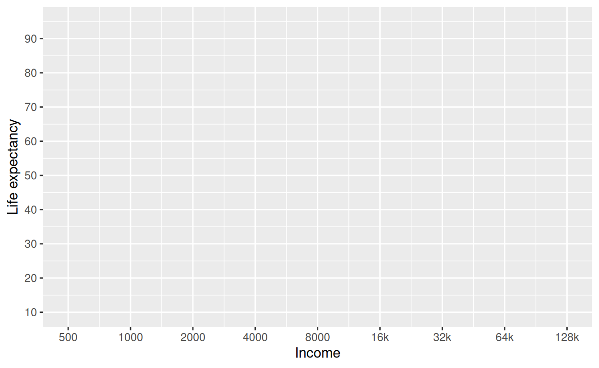
Theme
Note that the theme is very similar to theme_classic, but shows the major grid.
We also instruct the theme to remove the legend,
because we will add a custom one later on.
p <- p + theme_classic() +
theme(panel.grid.major=element_line(), legend.position="none")
p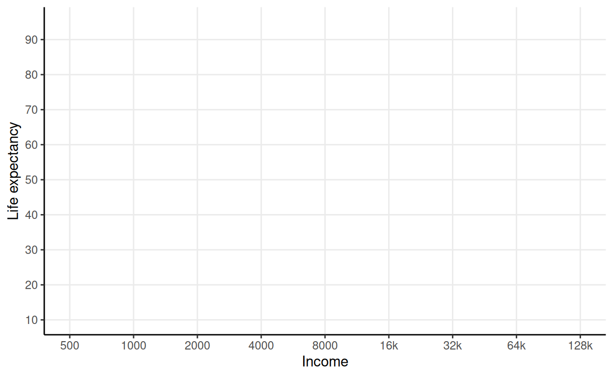
Additionally, we could continue to tinker with fonts and other parameters.
Annotations
The base panel depicts three annotations:
- A big background number indicating the year in the middle.
- Four income levels on the top part, whose breaks seem to be 3k, 8k and 24k.
- The axes’ units on the top left and bottom right corners.
For the background number, we could use annotate with a fixed label,
but we will use geom_text instead, even if we overplot it many times,
so that the year is read from the data.
Next, we add the income levels. Additionally, we will take the liberty of adding vertical lines to clearly demarcate the breaks.
tlevel <- c(1300, 5000, 14000, 40000)
blevel <- c(3000, 8000, 24000)
ilevel <- c("INCOME LEVEL 1", "LEVEL 2", "LEVEL 3", "LEVEL 4")
p <- p + geom_vline(xintercept=blevel, color="darkgray") +
annotate("text", x=tlevel, y=95, color="darkgray", vjust=0, size=3, label=ilevel) +
annotate("text", x=blevel, y=95, color="darkgray", vjust=0, size=5, label="◆")
p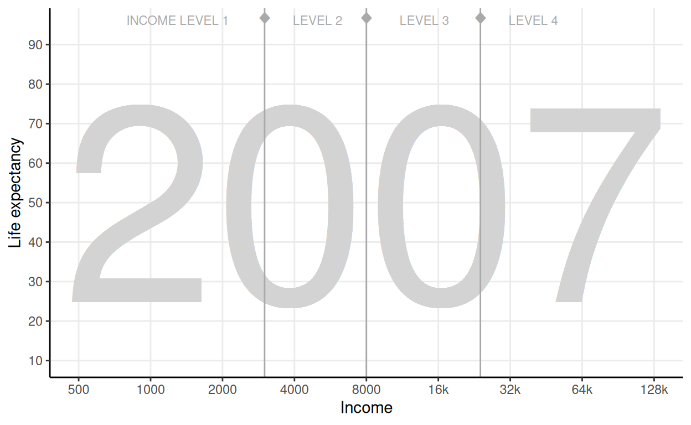
Finally, let’s add the units to the axes.
p <- p +
annotate("text", x=128000, y=10, hjust=0.95, vjust=1, size=3,
label="per person (GDP/capita, PPP$ inflation-adjusted") +
annotate("text", x=500, y=95, hjust=0.5, vjust=-1.5, size=3, angle=90, label="years")
p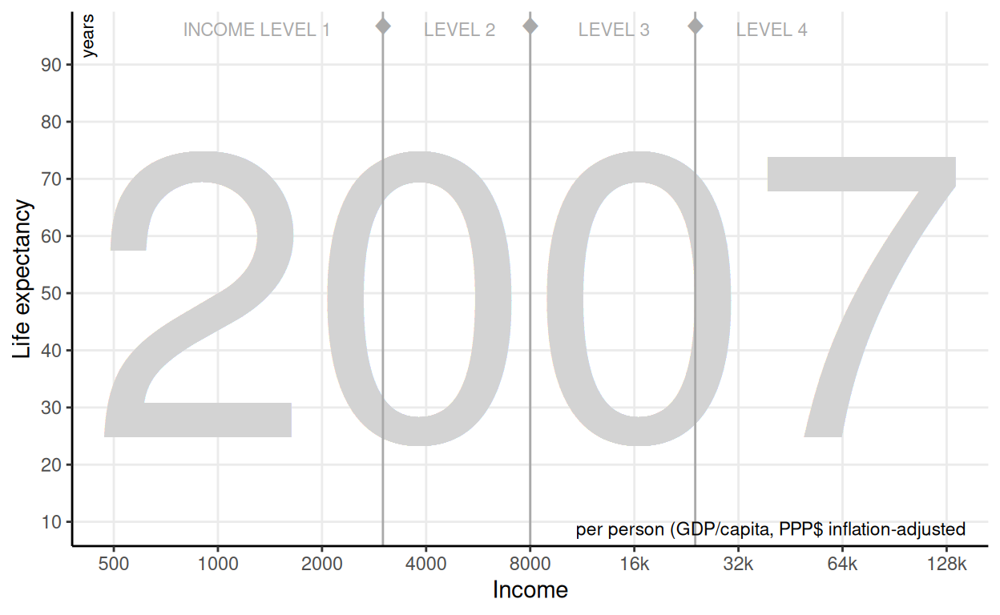
Data
The chart is a type of scatterplot, with one point per country, and colored by continent. The novelty here is that every dot is scaled up to represent the population size. Also, we will add some transparency to the points.
p <- p + geom_point(aes(color=continent, size=pop), alpha=0.7)
p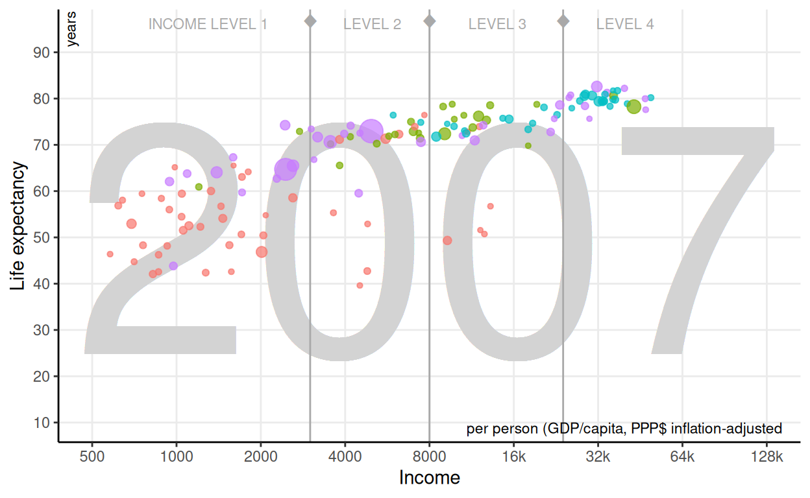
We are close, but a couple of adjustments are required. Let’s add a black line around the points (see shape 21), and adjust the range of the bubbles a bit.
p <- p + geom_point(aes(size=pop), color="#333333", shape=21) +
scale_size_area(max_size=25)
p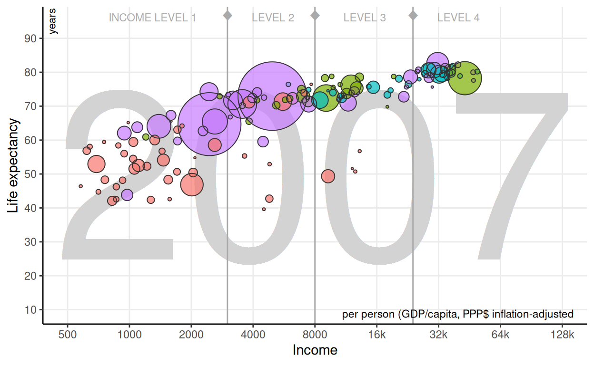
Finally, let’s replicate the same color scale. We need to provide them in the same order as the factor levels:
levels(gapminder$continent)[1] "Africa" "Americas" "Europe" "Asia" Therefore, from the web, page we obtain:
- Africa: Blue
rgb(0, 213, 233)->#00d5e9 - Americas: Green
rgb(127, 235, 0)->#7feb00 - Europe: Yellow
rgb(255, 231, 0)->#ffe700 - Asia: Red
rgb(255, 88, 114)->#ff5872
ccolors <- c("#00d5e9", "#7feb00", "#ffe700", "#ff5872")
p <- p + scale_color_manual(values=ccolors)
p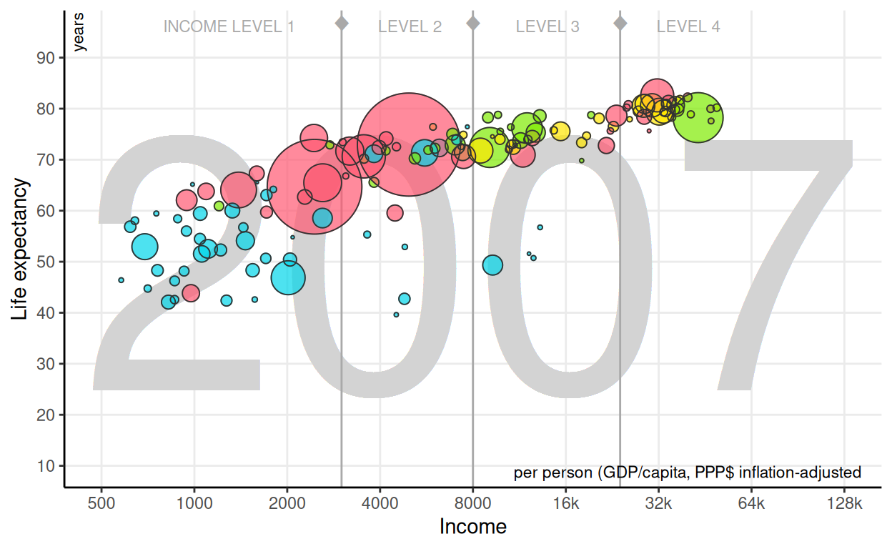
Legend
This chart has an interesting legend:
it takes advantage from the fact that continents are easily recognizable to use a map as a legend.
Let’s replicate it separately using data from ggplot2::map_data.
Rows: 99,338
Columns: 6
$ long <dbl> -69.89912, -69.89571, -69.94219, -70.00415, -70.06…
$ lat <dbl> 12.45200, 12.42300, 12.43853, 12.50049, 12.54697, …
$ group <dbl> 1, 1, 1, 1, 1, 1, 1, 1, 1, 1, 2, 2, 2, 2, 2, 2, 2,…
$ order <int> 1, 2, 3, 4, 5, 6, 7, 8, 9, 10, 12, 13, 14, 15, 16,…
$ region <chr> "Aruba", "Aruba", "Aruba", "Aruba", "Aruba", "Arub…
$ subregion <chr> NA, NA, NA, NA, NA, NA, NA, NA, NA, NA, NA, NA, NA…This data needs to be tweaked a little bit. We need to:
- Filter out the Antarctica region.
- Add a new column
continentwith the help of thecountrycodepackage. - Include Oceania into Asia.
- Drop any missing values for
continent.
Now, let’s create the map:
legend <- ggplot(world) +
aes(long, lat, group=group, map_id=region, fill=continent) +
geom_map(map=world) +
scale_fill_manual(values=ccolors) +
theme_void() + theme(legend.position="none")
legend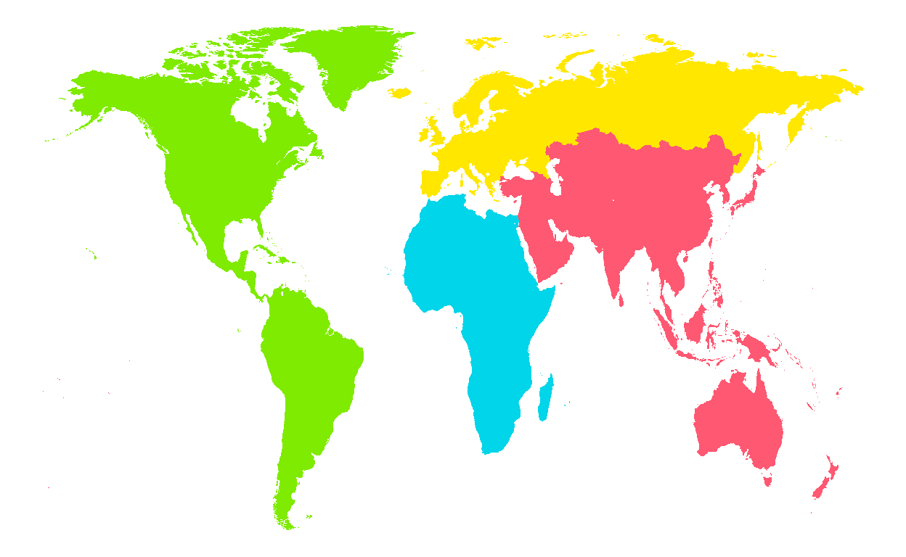
Final result
Single year
In summary, so far we have
- set coordinates and axes, with custom breaks;
- set an appropriate theme and prevent the default legend from appearing;
- added several annotations, including year, income levels and axis units;
- added the data points and made several adjustments, including size and color;
- created a custom legend based on a simple colored world map.
There are several ways we can merge the main plot and the legend. In this case, let’s add it as an inset with the custom annotation function. Note that, in contrast to the regular annotation function, this one doesn’t seem to support logarithmic scales very well. As a result, the user needs to provide the transformed values directly.
p <- p + annotation_custom(
ggplotGrob(legend), xmin=log10(16000), ymin=10, ymax=40)
p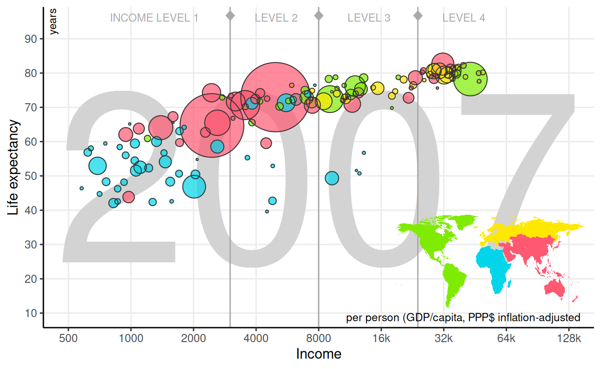
Finally, we can improve this static single-year visualization by adding some context, i.e. a title, a subtitle and a caption.
p + labs(
title = "World Life Expectancy vs. Income in 2007",
subtitle = paste(
"African countries are still lagging behind in terms of general life",
"expectancy.\nEuropean and American countries are the healthiest",
"and richest countries in the world."),
caption = "Source: gapminder.org"
)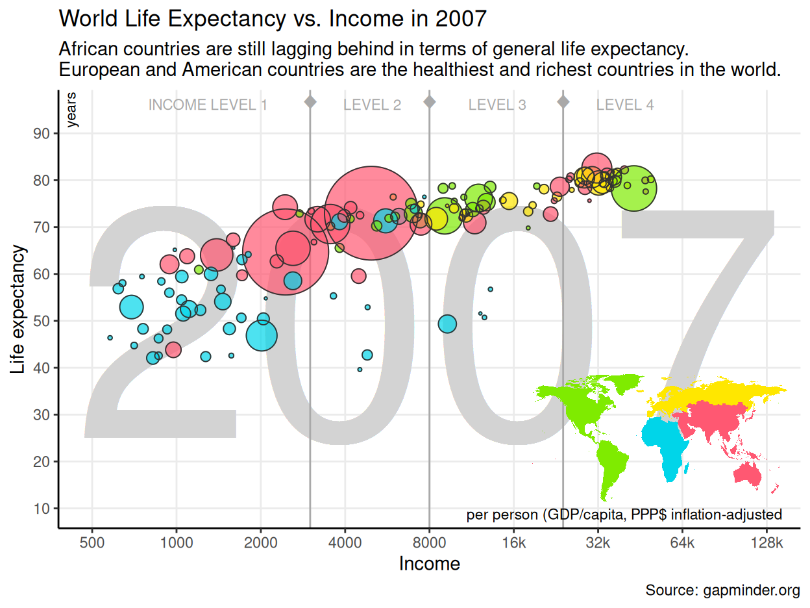
Multiple years, static
So far, we covered the case for a single year. How could we show the evolution, which is the point in this dataset? Of course we can define facets to plot all the years. In the following chart,
gginnards::delete_layersis used to remove the background year;- we switch to the whole dataset using the
%+%operator; - data is faceted in two rows;
- axis labels are slightly rotated to make space for them.
Note also that we need to manually scale down a bit the range of the bubbles to preserve more or less the previous aspect ratio.
gginnards::delete_layers(p, match_type="GeomText") %+% gapminder +
facet_wrap("year", nrow=2) +
scale_size_area(max_size=7) +
theme(axis.text.x=element_text(angle=45, vjust=1, hjust=1))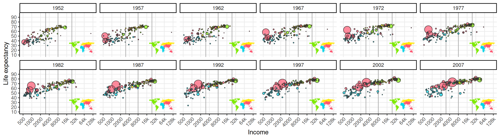
Multiple years, dynamic
And we can of course animate it!
We can easily convert any ggplot2 chart to plotly using plotly::ggplotly,
which produces interactive web-based charts.
Furthermore, if we set the frame aesthetic, it is automatically detected,
and an animation is added based on the corresponding variable.